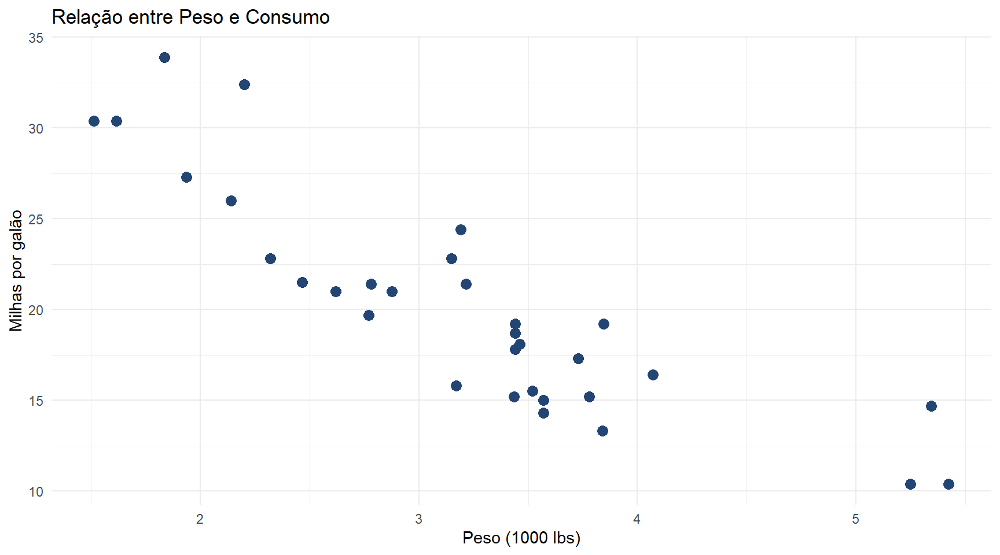

[1] 41. Seus primeiros passos com R
Um guia amigável para começar sua jornada com R
☕ Assine o Café com R
Fique por dentro das aulas, conteúdos, newsletter!
Que cada gole desperte uma nova ideia.
Que cada script abra uma nova conversa.
Que o Café com R, se torne um ponto de encontro nosso!
Bem-vindo ao mundo do R!
Se você está aqui, é porque decidiu aprender R e essa é uma excelente decisão!

Allison Horst.
Não se preocupe se:
- Você nunca programou antes
- Tudo parecer confuso no início
- Você cometer erros (todos cometemos!)
- Precisar de tempo para aprender
Lembre-se: toda jornada começa com um primeiro passo, e este guia vai te acompanhar nessa caminhada.
O que é R, afinal?
R é uma linguagem de programação criada especialmente para análise de dados e estatística.
Por que R é especial:
- Gratuito e de código aberto
- Comunidade enorme e acolhedora
- Milhares de pacotes prontos para usar
- Excelente para visualização de dados
- Muito usado em pesquisa e empresas
Em resumo: R é sua ferramenta para transformar dados em insights.
Passo 1: Instalando o R
Primeiro, vamos instalar o R no seu computador.
Acesse:
- Site oficial: https://cran.r-project.org/
- Escolha seu sistema operacional (Windows, Mac ou Linux)
- Baixe e instale a versão mais recente
Passo 1: Instalando o R (cont)
Dica importante:
O R é o “motor” do seu carro.
Ele faz todo o trabalho, mas você ainda precisa de um “painel de controle” mais amigável o RStudio.
Não vamos praticar isso agora, mas estes são os passos que você fará no seu computador!
Passo 2: Instalando o RStudio
O RStudio (agora chamado Posit) é uma interface que torna o R muito mais fácil de usar.
Acesse:
- Site oficial: https://posit.co/download/rstudio-desktop/
- Baixe a versão gratuita (RStudio Desktop)
- Instale normalmente
Passo 2: Instalando o RStudio
Analogia útil:
- R = motor do carro
- RStudio = painel com volante, pedais, etc.
Você pode usar só o R, mas o RStudio torna tudo mais confortável!
Esta etapa você fará no seu computador após a apresentação.
Conhecendo o RStudio
Quando você abrir o RStudio, verá 4 painéis principais:
1. Script (superior esquerdo): Onde você escreve seus códigos
2. Console (inferior esquerdo): Onde o R executa os comandos
3. Environment (superior direito): Mostra objetos salvos na memória
4. Files/Plots/Help (inferior direito): Arquivos, gráficos e ajuda
Respire fundo! No começo parece muito, mas logo você se acostuma.
Conhecendo o RStudio

Essa imagem é minha e um pouco antiga, mas nada mudou!
Seu primeiro comando no R
Vamos começar com algo simples. No Console, digite:
Parabéns! Você acabou de fazer seu primeiro cálculo no R.
Seu primeiro comando no R
Agora tente:
Dica: O R pode ser uma calculadora super poderosa!
Criando objetos (variáveis)
No R, guardamos valores em objetos usando <- (ou =):
Pense nos objetos como gavetas onde você guarda informações para usar depois.
Regras para nomear objetos
Pode:
- Usar letras, números e underscores:
dados_2024 - Começar com letra:
resultado - Usar snake_case:
meus_dados
Regras para nomear objetos
Não pode:
- Começar com número:
2dados - Usar espaços:
meus dados - Usar caracteres especiais:
dados@2024
Dica: Use nomes descritivos! idade_pacientes é melhor que x.
Criando seu primeiro script
Scripts são arquivos onde você salva seus códigos.
Para criar um script:
- Clique em File → New File → R Script
- Ou use o atalho:
Ctrl + Shift + N(Windows/Linux) ouCmd + Shift + N(Mac) ## Criando seu primeiro script {background-color=“#E5D3B3”} Vantagens do script:
- Salva seu trabalho
- Permite revisitar e corrigir
- Compartilha com outras pessoas
- Reproduz análises
Seu primeiro script na prática
Digite no script (não no console):
# Meu primeiro script em R
# Data: 2025-11-29
# Autor: Seu Nome
# Calculando média de notas
nota1 <- 8
nota2 <- 7
nota3 <- 9
media <- (nota1 + nota2 + nota3) / 3
print(media)Para executar: selecione o código e pressione Ctrl + Enter (Windows/Linux) ou Cmd + Enter (Mac)
Experimente isso quando estiver no RStudio!
A importância dos comentários
Comentários começam com # e são ignorados pelo R.
Use comentários para explicar SEU RACIOCÍNIO, não o que o código faz (isso já está óbvio)
Bom comentário:
A importância dos comentários
Comentário desnecessário:
Passo 3: Instalando pacotes
Pacotes são coleções de funções prontas que expandem o R.
Para instalar um pacote:
Para carregar um pacote:
Passo 3: Instalando pacotes
Analogia: Instalar é como baixar um app no celular. Carregar é como abrir o app para usar.
Não execute isso agora — só quando estiver no seu RStudio!
O kit inicial: tidyverse
O tidyverse é um conjunto de pacotes que trabalham bem juntos:
- readr — ler dados
- dplyr — manipular dados
- tidyr — organizar dados
- ggplot2 — visualizar dados
- stringr — trabalhar com texto
- lubridate — trabalhar com datas
Instalando tudo de uma vez (no seu computador):
O kit inicial: tidyverse
Configurando sua pasta de trabalho
Pasta de trabalho (working directory) é onde o R procura e salva arquivos.
Ver qual é sua pasta atual:
Configurando sua pasta de trabalho
Definir nova pasta:
Dica melhor: Use Projetos do RStudio (falaremos disso em breve!)
Estes comandos você usará quando estiver trabalhando no RStudio.
Criando um Projeto no RStudio
Projetos organizam melhor seu trabalho.
Para criar:
- File → New Project
- Escolha “New Directory”
- Escolha “New Project”
- Dê um nome e escolha onde salvar
Criando um Projeto no RStudio
Vantagens:
- Organiza arquivos automaticamente
- Define pasta de trabalho
- Facilita retomar trabalho depois
- Facilita compartilhar
Estrutura de pastas recomendada
Dentro do seu projeto, crie pastas:
MeuProjeto/
├── dados/ # Dados brutos
├── scripts/ # Seus códigos R
├── resultados/ # Tabelas e arquivos gerados
├── graficos/ # Visualizações salvas
└── relatorios/ # Relatórios finaisEsta organização vai te salvar no futuro!
Importando dados - Primeiro exemplo
Vamos usar um dataset que já vem com o R:
mpg cyl disp hp drat wt qsec vs am gear carb
Mazda RX4 21.0 6 160 110 3.90 2.620 16.46 0 1 4 4
Mazda RX4 Wag 21.0 6 160 110 3.90 2.875 17.02 0 1 4 4
Datsun 710 22.8 4 108 93 3.85 2.320 18.61 1 1 4 1
Hornet 4 Drive 21.4 6 258 110 3.08 3.215 19.44 1 0 3 1
Hornet Sportabout 18.7 8 360 175 3.15 3.440 17.02 0 0 3 2
Valiant 18.1 6 225 105 2.76 3.460 20.22 1 0 3 1Importando seus próprios dados
Arquivos CSV:
Onde está meu arquivo?
- Se estiver na pasta
dados/do seu projeto, use:"dados/arquivo.csv" - Use sempre caminhos relativos (nunca
"C:/Users/...")
Explorando seus dados
'data.frame': 32 obs. of 11 variables:
$ mpg : num 21 21 22.8 21.4 18.7 18.1 14.3 24.4 22.8 19.2 ...
$ cyl : num 6 6 4 6 8 6 8 4 4 6 ...
$ disp: num 160 160 108 258 360 ...
$ hp : num 110 110 93 110 175 105 245 62 95 123 ...
$ drat: num 3.9 3.9 3.85 3.08 3.15 2.76 3.21 3.69 3.92 3.92 ...
$ wt : num 2.62 2.88 2.32 3.21 3.44 ...
$ qsec: num 16.5 17 18.6 19.4 17 ...
$ vs : num 0 0 1 1 0 1 0 1 1 1 ...
$ am : num 1 1 1 0 0 0 0 0 0 0 ...
$ gear: num 4 4 4 3 3 3 3 4 4 4 ...
$ carb: num 4 4 1 1 2 1 4 2 2 4 ... mpg cyl disp hp
Min. :10.40 Min. :4.000 Min. : 71.1 Min. : 52.0
1st Qu.:15.43 1st Qu.:4.000 1st Qu.:120.8 1st Qu.: 96.5
Median :19.20 Median :6.000 Median :196.3 Median :123.0
Mean :20.09 Mean :6.188 Mean :230.7 Mean :146.7
3rd Qu.:22.80 3rd Qu.:8.000 3rd Qu.:326.0 3rd Qu.:180.0
Max. :33.90 Max. :8.000 Max. :472.0 Max. :335.0
drat wt qsec vs
Min. :2.760 Min. :1.513 Min. :14.50 Min. :0.0000
1st Qu.:3.080 1st Qu.:2.581 1st Qu.:16.89 1st Qu.:0.0000
Median :3.695 Median :3.325 Median :17.71 Median :0.0000
Mean :3.597 Mean :3.217 Mean :17.85 Mean :0.4375
3rd Qu.:3.920 3rd Qu.:3.610 3rd Qu.:18.90 3rd Qu.:1.0000
Max. :4.930 Max. :5.424 Max. :22.90 Max. :1.0000
am gear carb
Min. :0.0000 Min. :3.000 Min. :1.000
1st Qu.:0.0000 1st Qu.:3.000 1st Qu.:2.000
Median :0.0000 Median :4.000 Median :2.000
Mean :0.4062 Mean :3.688 Mean :2.812
3rd Qu.:1.0000 3rd Qu.:4.000 3rd Qu.:4.000
Max. :1.0000 Max. :5.000 Max. :8.000 Explorando seus dados (cont.)
[1] "mpg" "cyl" "disp" "hp" "drat" "wt" "qsec" "vs" "am" "gear"
[11] "carb" mpg cyl disp hp drat wt qsec vs am gear carb
Mazda RX4 21.0 6 160 110 3.90 2.620 16.46 0 1 4 4
Mazda RX4 Wag 21.0 6 160 110 3.90 2.875 17.02 0 1 4 4
Datsun 710 22.8 4 108 93 3.85 2.320 18.61 1 1 4 1Manipulação básica com dplyr
library(dplyr)
# Filtrar linhas
carros_potentes <- mtcars |>
filter(hp > 150)
# Ver resultado
head(carros_potentes, 3) mpg cyl disp hp drat wt qsec vs am gear carb
Hornet Sportabout 18.7 8 360.0 175 3.15 3.44 17.02 0 0 3 2
Duster 360 14.3 8 360.0 245 3.21 3.57 15.84 0 0 3 4
Merc 450SE 16.4 8 275.8 180 3.07 4.07 17.40 0 0 3 3Selecionando colunas
# Selecionar apenas algumas colunas
carros_simples <- mtcars |>
select(mpg, cyl, hp)
head(carros_simples, 4) mpg cyl hp
Mazda RX4 21.0 6 110
Mazda RX4 Wag 21.0 6 110
Datsun 710 22.8 4 93
Hornet 4 Drive 21.4 6 110O operador |> (pipe) significa “e então…”
Leia como: “Pegue mtcars, E ENTÃO selecione as colunas…”
Criando novas variáveis
Seu primeiro gráfico!
Entendendo o ggplot2
Todo gráfico ggplot2 tem 3 elementos:
- Dados:
ggplot(mtcars, ...) - Mapeamento estético:
aes(x = wt, y = mpg) - Geometria:
geom_point()(tipo de gráfico)
Você CONSTRÓI gráficos adicionando camadas com +
Erros comuns (e como evitá-los)
Erro 1: Esquecer de carregar pacotes
# ❌ Erro
dados <- read_csv("arquivo.csv")
# ✅ Correto
library(readr)
dados <- read_csv("arquivo.csv")Sempre carregue os pacotes no início do script!
Erros comuns (cont.)
Erro 2: Caminhos absolutos
# ❌ Ruim (só funciona no seu computador)
dados <- read_csv("C:/Users/Maria/Desktop/dados.csv")
# ✅ Bom (funciona em qualquer computador com o projeto)
dados <- read_csv("dados/dados.csv")Use projetos e caminhos relativos!
Erros comuns (cont.)
Erro 3: Sobrescrever objetos importantes
# ❌ Perigo!
dados <- read_csv("originais.csv")
dados <- dados |> filter(idade > 18) # perdeu os originais!
# ✅ Melhor
dados <- read_csv("originais.csv")
dados_adultos <- dados |> filter(idade > 18)Guarde o original e crie novos objetos!
Erros comuns (cont.)
Erro 4: Não usar o pipe |>
# ❌ Difícil de ler
resultado <- arrange(filter(select(dados, nome, idade), idade > 18), nome)
# ✅ Muito melhor!
resultado <- dados |>
select(nome, idade) |>
filter(idade > 18) |>
arrange(nome)O pipe torna o código MUITO mais legível!
Pedindo ajuda no R
Ajuda sobre uma função:
Procurar ajuda:
Pedindo ajuda no R
Exemplos:
Não tenha vergonha de pedir ajuda! Até programadores experientes consultam a documentação constantemente.
Onde buscar ajuda
Dentro do R:
- Aba “Help” no RStudio
?funcaopara ajuda específica- Vignettes dos pacotes
Na internet:
- Stack Overflow (em inglês e português)
- Google: “como fazer X em R”
- ChatGPT/Claude para explicações
- Comunidade R Brasil (Telegram/Discord)
Sites e recursos úteis
Aprendizado:
- R for Data Science:Livro gratuito online
- RStudio Education:Tutoriais oficiais
- Posit Cheatsheets: Guias rápidos
Comunidade:
Boas práticas desde o início
1. Use projetos do RStudio
- Mantém tudo organizado
- Facilita compartilhar
2. Comente seu código
- Explique o PORQUÊ, não o QUÊ
- Seu eu-futuro agradece
3. Use nomes descritivos
dados_vendas_2024>df1calcular_media()>func()
Boas práticas (cont.)
4. Salve frequentemente
- Scripts:
Ctrl + S/Cmd + S - Trabalho perdido dói!
5. Use versionamento
- Git/GitHub quando estiver confortável
- Por enquanto, use datas nos nomes:
analise_2025-11-29.R
6. Teste em partes
- Execute linha por linha
- Verifique resultados parciais
Workflow típico de análise
1. Importar dados
2. Explorar e limpar
3. Transformar
Este será seu workflow quando trabalhar com dados reais!
Workflow típico (cont.)
4. Visualizar
5. Modelar (quando necessário)
6. Comunicar resultados
- Gráficos salvos
- Relatórios em Quarto/RMarkdown
Você vai praticar este workflow nos seus projetos!
Exemplo completo do zero
Vamos fazer uma análise completa com o dataset iris:
# 1. Carregar pacotes
library(dplyr)
library(ggplot2)
# 2. Carregar dados
data(iris)
# 3. Explorar
glimpse(iris)Rows: 150
Columns: 5
$ Sepal.Length <dbl> 5.1, 4.9, 4.7, 4.6, 5.0, 5.4, 4.6, 5.0, 4.4, 4.9, 5.4, 4.…
$ Sepal.Width <dbl> 3.5, 3.0, 3.2, 3.1, 3.6, 3.9, 3.4, 3.4, 2.9, 3.1, 3.7, 3.…
$ Petal.Length <dbl> 1.4, 1.4, 1.3, 1.5, 1.4, 1.7, 1.4, 1.5, 1.4, 1.5, 1.5, 1.…
$ Petal.Width <dbl> 0.2, 0.2, 0.2, 0.2, 0.2, 0.4, 0.3, 0.2, 0.2, 0.1, 0.2, 0.…
$ Species <fct> setosa, setosa, setosa, setosa, setosa, setosa, setosa, s…Exemplo completo (cont.)
# 4. Resumir dados
resumo <- iris |>
group_by(Species) |>
summarise(
media_sepala = mean(Sepal.Length),
media_petala = mean(Petal.Length),
n = n()
)
print(resumo)# A tibble: 3 × 4
Species media_sepala media_petala n
<fct> <dbl> <dbl> <int>
1 setosa 5.01 1.46 50
2 versicolor 5.94 4.26 50
3 virginica 6.59 5.55 50Exemplo completo (cont.)
# 5. Visualizar
ggplot(iris, aes(x = Sepal.Length, y = Petal.Length, color = Species)) +
geom_point(size = 3, alpha = 0.7) +
scale_color_manual(values = c("#224573", "#6B4F4F", "#4A6FA5")) +
theme_minimal() +
labs(
title = "Relação entre Comprimento da Sépala e Pétala",
x = "Comprimento da Sépala (cm)",
y = "Comprimento da Pétala (cm)"
)Salvando seu trabalho
Salvar script:
Ctrl + S/Cmd + S
Salvar gráfico:
Salvar dados processados:
Checklist do iniciante
Preparação:
Em cada análise:
Próximos passos na sua jornada
Curto prazo:
- Pratique com datasets do R (
iris,mtcars,diamonds) - Experimente diferentes gráficos no ggplot2
- Refaça tutoriais com seus próprios dados
Médio prazo:
- Aprenda a criar relatórios com Quarto
- Explore análise exploratória com DataExplorer
- Aprenda mais sobre dplyr e tidyr
Longo prazo:
- Modelagem estatística
- Machine learning com tidymodels
- Dashboards com Shiny
Dicas de ouro
1. Pratique regularmente
- 15 minutos por dia > 2 horas uma vez por semana
2. Copie e modifique
- Não há problema em copiar código
- Entenda o que está fazendo
- Adapte para sua necessidade
3. Cometa erros
- Erros são parte do aprendizado
- Leia as mensagens de erro com calma
- Google a mensagem de erro
Dicas de ouro (cont.)
4. Construa seu próprio banco de códigos
- Salve snippets úteis
- Crie templates de análises
- Documente suas soluções
5. Participe da comunidade
- Pergunte quando tiver dúvidas
- Compartilhe o que aprender
- Ajude outros iniciantes
6. Seja paciente consigo mesmo
- Aprender leva tempo
- Celebre pequenas vitórias
- Compare-se apenas com você de ontem
Recursos gratuitos para continuar
Livros online gratuitos:
Tutoriais interativos:
- RStudio Primers
- Swirl (aprenda dentro do R!)
Comunidades brasileiras:
Um último conselho
“A melhor maneira de aprender R é usando R.”
Não espere entender tudo antes de começar.
Comece pequeno:
- Um gráfico simples hoje
- Uma análise básica amanhã
- Um mini projeto na semana que vem
Cada linha de código que você escreve é um passo na direção certa.
Você já deu o primeiro passo ao chegar até aqui. Parabéns!
Projeto prático sugerido
Para praticar, faça um mini projeto:
- Escolha um dataset (pode ser do R:
iris,mtcars,diamonds) - Crie um projeto no RStudio
- Escreva um script que:
- Carregue os dados
- Faça resumos estatísticos
- Crie 2-3 gráficos
- Tire pelo menos uma conclusão
- Salve tudo organizado nas pastas
- Adicione comentários explicando seu raciocínio
Este será seu primeiro projeto completo!
Recapitulando
Você aprendeu:
- Instalar R e RStudio
- Criar projetos e scripts
- Usar o console e executar códigos
- Instalar e carregar pacotes
- Importar e explorar dados
- Manipular dados com dplyr
- Criar visualizações com ggplot2
- Boas práticas e organização
- Onde buscar ajuda
Isso é MUITO para um primeiro contato!
Mensagem final
Você não precisa saber tudo agora.
Você não precisa ser perfeito.
Você só precisa começar.
O R é uma ferramenta poderosa, e você acabou de ganhar a chave para usá-la.
O resto é prática, paciência e persistência.
Bem-vindo à comunidade R!
Agora
Seus primeiros passos estão completos!
Agora é hora de praticar e explorar.
Lembre-se: a comunidade R está aqui para ajudar. Não hesite em perguntar!
Bons estudos e ótimas análises!
Muito obrigada!
Esta apresentação é parte do projeto Café com R
É OPEN, USE, COMPARTILHE!
Allison Horst.
☕ Assine o Café com R
Fique por dentro das aulas, conteúdos, newsletter!
Que cada gole desperte uma nova ideia.
Que cada script abra uma nova conversa.
Que o Café com R, se torne um ponto de encontro nosso!

Jennifer Lopes • Café com R